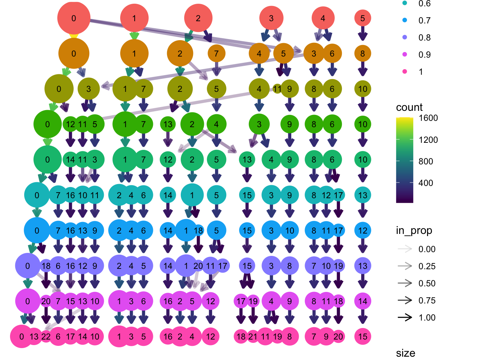
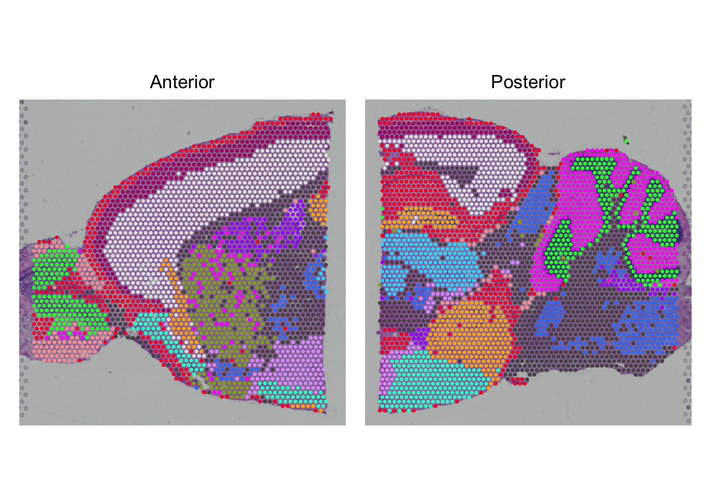

Integration and clustering
We load the required packages:
And we load the list created after normalization and scaling, followed by a merge:
Dimensionality reduction
In order to perform dimensionality reduction, we first need to select variable features of both slices. To get a good representation of both slices, we take the intersect (i.e. genes that are variable in both slices):
VariableFeatures(seu) <- intersect(VariableFeatures(seu_list$Anterior),
VariableFeatures(seu_list$Posterior))How many variable features do we have? Why did we select fewer genes than the default (check ?VariableFeatures)?
Just by typing the object name we already see the number of variable features:
seuAn object of class Seurat
83447 features across 6039 samples within 3 assays
Active assay: SCT (18877 features, 1938 variable features)
3 layers present: counts, data, scale.data
2 other assays present: Spatial, RNA
2 spatial fields of view present: Anterior PosteriorSo, we have 1938 variable features. Because we selected the features that are variable in both slices, it is fewer genes than the originally selected default.
Now that we have selected the most variable features, we can generate a PCA based on the normalized and scaled data of those:
seu <- RunPCA(seu, assay = "SCT", npcs = 50, verbose = FALSE)
DimPlot(seu, reduction = "pca", group.by = "orig.ident") +
scale_color_viridis_d(option = "cividis")
Based on the PCA, we can create a UMAP to get a representation of all 50 dimensions in a two dimensional space:
seu <- RunUMAP(seu, reduction = "pca", dims = 1:50)
DimPlot(seu, reduction = "umap", group.by = "orig.ident") +
scale_color_viridis_d(option = "cividis")
The two slices come from one brain, the posterior and anterior sides. Do you expect spots from similar cells/tissue in both slices? Is that represented in the UMAP?
Yes, it is likely that there are similar spots in both slides, but the spots of both slices hardly overlap in the UMAP. Therefore, it makes sense to do an integration.
Integration
To integrate the two slices, we first need to select integration features. These are genes that are variable in both slices. We then prepare the data for integration, find the integration anchors (i.e. spots that are within each others neigbourhoods), and integrate the data:
You can safely ignore the warning: Warning: Different cells and/or features from existing assay SCT. See this issue.
features <- SelectIntegrationFeatures(seu_list)
seu_list <- PrepSCTIntegration(seu_list, anchor.features = features)
anchors <- FindIntegrationAnchors(
seu_list,
normalization.method = "SCT",
anchor.features = features
)
seu <- IntegrateData(anchors, normalization.method = "SCT")How is the integrated data stored in the seurat object?
Hint: type seu to get an idea.
seuAn object of class Seurat
85447 features across 6039 samples within 4 assays
Active assay: integrated (2000 features, 2000 variable features)
2 layers present: data, scale.data
3 other assays present: Spatial, RNA, SCT
2 spatial fields of view present: Anterior PosteriorWe see that our object now has four assays, integrated (active), Spatial, RNA and SCT. The integrated data is stored in the integrated assay. We use this assay only for dimensionality reduction and clustering. When we go to marker gene identification, we use SCT again.
Because we re-do the dimensionality reduction, we also again extract the variable features, run the PCA and the UMAP:
seu <- FindVariableFeatures(seu)
seu <- RunPCA(seu, npcs = 50, verbose = FALSE)
seu <- RunUMAP(seu, reduction = "pca", dims = 1:50)
DimPlot(seu, reduction = "umap") +
scale_color_viridis_d(option = "cividis")
Identifying clusters
Seurat implements a graph-based clustering approach. Distances between the spots are calculated based on previously identified PCs. Briefly, Seurat identifies clusters of spots by a shared nearest neighbor (SNN) modularity optimization based clustering algorithm. First, it identifies k-nearest neighbors (KNN) and constructs the SNN graph. Then it optimizes the modularity function to determine clusters. For a full description of the algorithms, see Waltman and van Eck (2013) The European Physical Journal B.
The FindClusters function implements the procedure, and contains a resolution parameter that sets the granularity of the downstream clustering, with increased values leading to a greater number of clusters.
resolution_vector <- seq(0.1,1,0.1)
seu <- FindNeighbors(seu, reduction = "pca", dims = 1:50)Computing nearest neighbor graphComputing SNNseu <- FindClusters(object = seu,
resolution = resolution_vector,
verbose=FALSE)Some new columns appeared in the metadata data frame after the clustering, each representing the cluster ID per spot for a given resolution:
colnames(seu@meta.data) [1] "orig.ident" "nCount_Spatial" "nFeature_Spatial"
[4] "percent_mt" "percent_mt_keep" "nFeature_Spatial_keep"
[7] "nCount_SCT" "nFeature_SCT" "integrated_snn_res.0.1"
[10] "integrated_snn_res.0.2" "integrated_snn_res.0.3" "integrated_snn_res.0.4"
[13] "integrated_snn_res.0.5" "integrated_snn_res.0.6" "integrated_snn_res.0.7"
[16] "integrated_snn_res.0.8" "integrated_snn_res.0.9" "integrated_snn_res.1"
[19] "seurat_clusters" To get an overview of the clustering over the different resolutions, we can use clustree to get an idea:
clustree(seu, prefix = "integrated_snn_res.")
Which resolution would you choose for the clusters? If you have made up your mind, set the cluster column to the default identity with SetIdent.
There is not ‘true’ clustering, but based on the clustree plot, it seems that after a resolution of 0.5, the clustering stays relatively stable:
res <- "integrated_snn_res.0.4"
seu <- SetIdent(seu, value = res)The script below assumes that you have set object res to the column of your selected resolution, e.g.:
# this is not (necessarily) the correct answer to the previous question!
res <- "integrated_snn_res.0.8"Now that we have selected a resolution, we can color both the UMAP and the slices accordingly. First we defnie some appropriate colors, then we plot the UMAP with DimPlot and the slices with SpatialPlot.
nclust <- seu[[res]] |> unique() |> nrow()
cluster_cols <- viridis::viridis_pal(option = "H")(nclust)
DimPlot(seu,
group.by = res,
shuffle = TRUE,
cols = cluster_cols)
SpatialPlot(seu, group.by = res, pt.size.factor = 2) +
plot_layout(guides='collect') &
theme(legend.position = "none") &
scale_fill_viridis_d(option = "H")
After integration and clustering, we can save the output as an rds files: